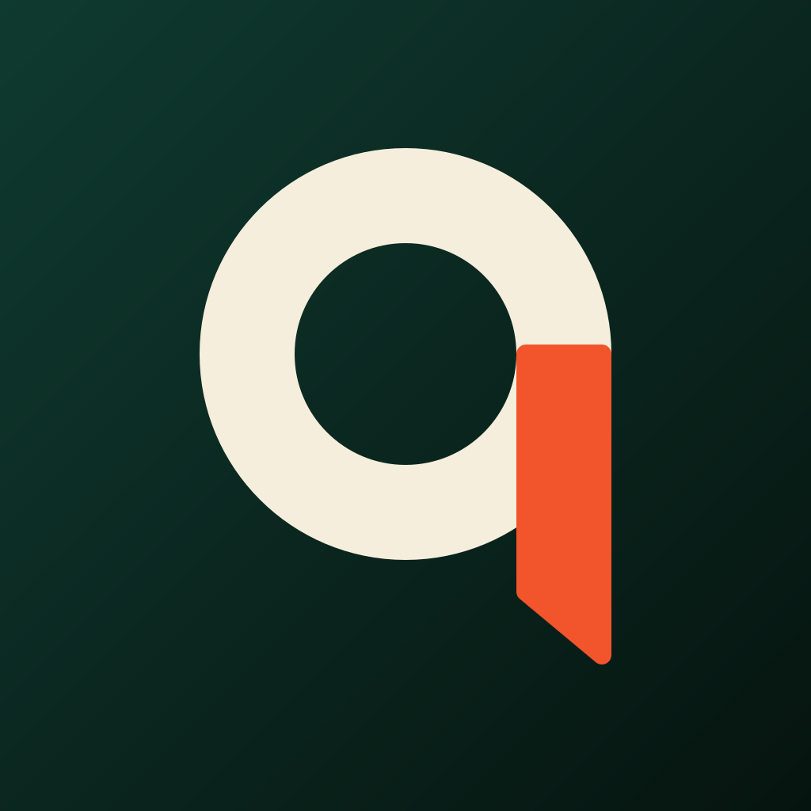

Qarzaad
Qarzaad (qarz + azaad, "debt-free") is a private iPhone app for families who share expenses and debts in the UAE.
- Upload bank statements, screenshots and your AECB credit report. The app reads them and builds your ledger and debt list.
- Get a month-by-month debt payoff plan.
- Share chosen totals with a family group, split bills by salary ratio, and record payments with proof that another member approves.
- Optionally write meeting notes and action items to a Google Sheet the app creates in your Drive.
There is no Qarzaad server. Your data stays on your iPhone and in your own iCloud.
Privacy policy